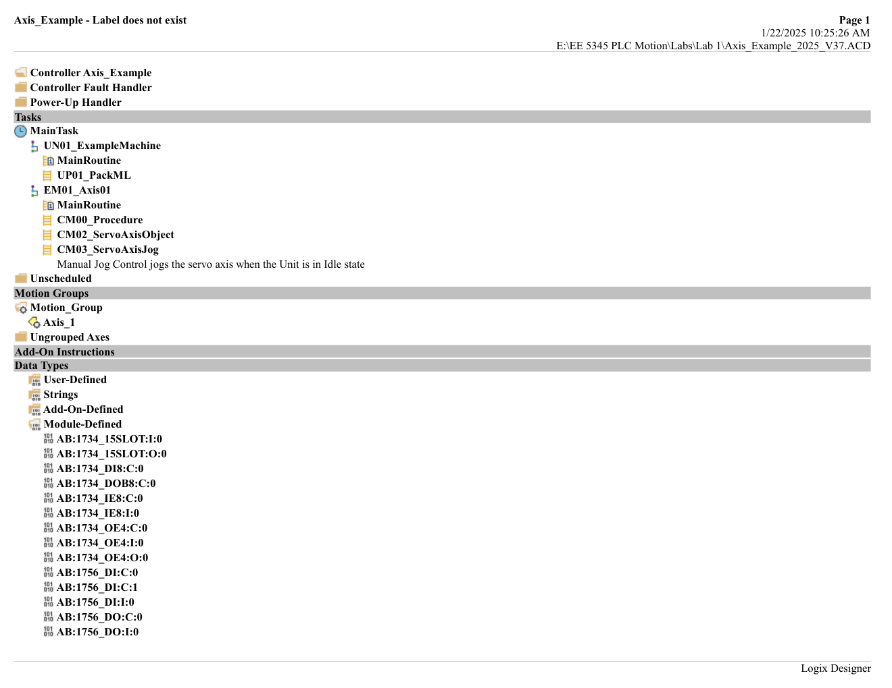
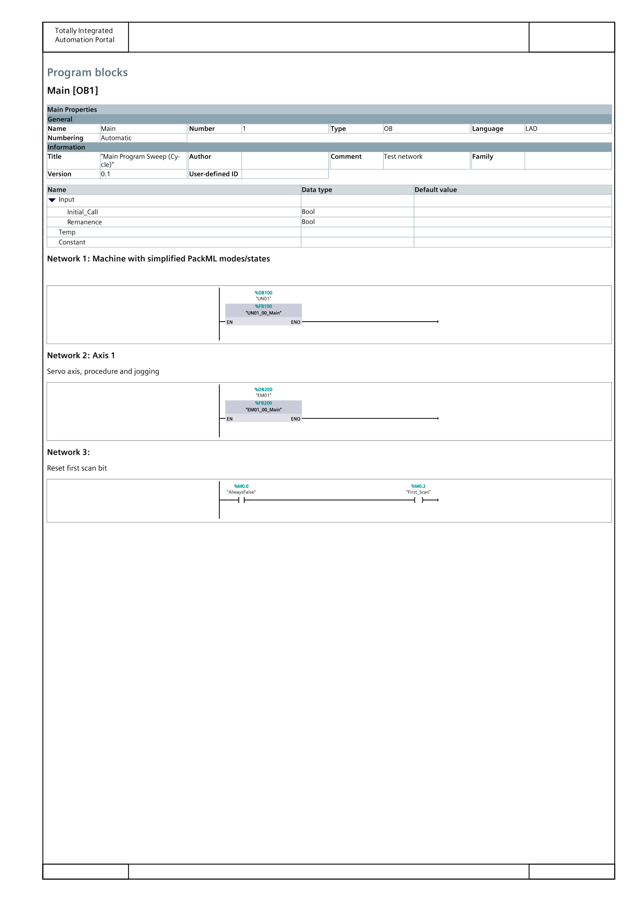
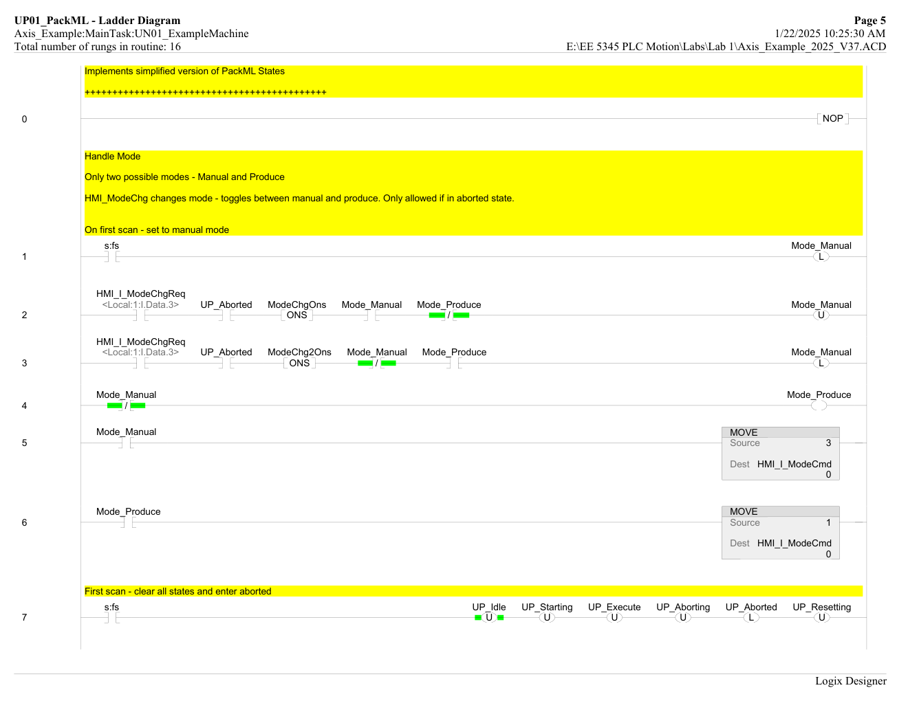
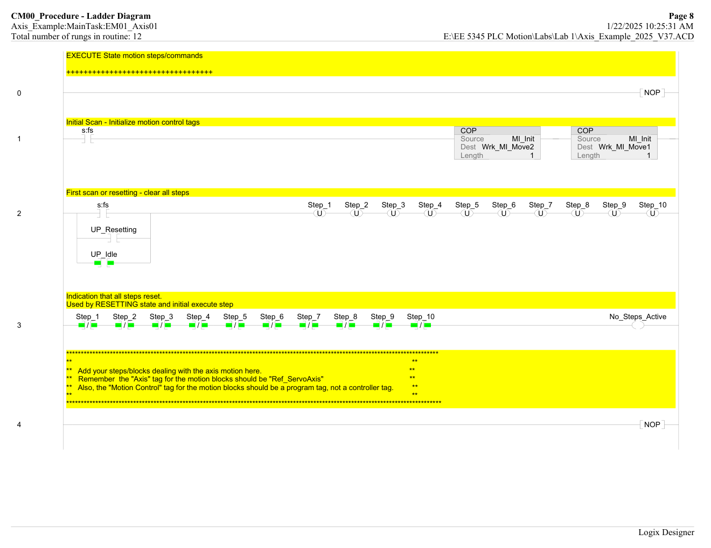
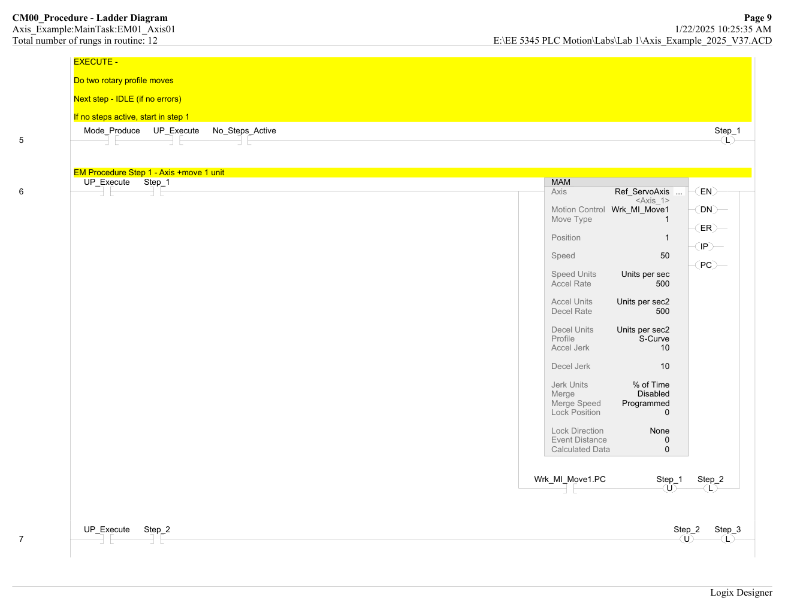
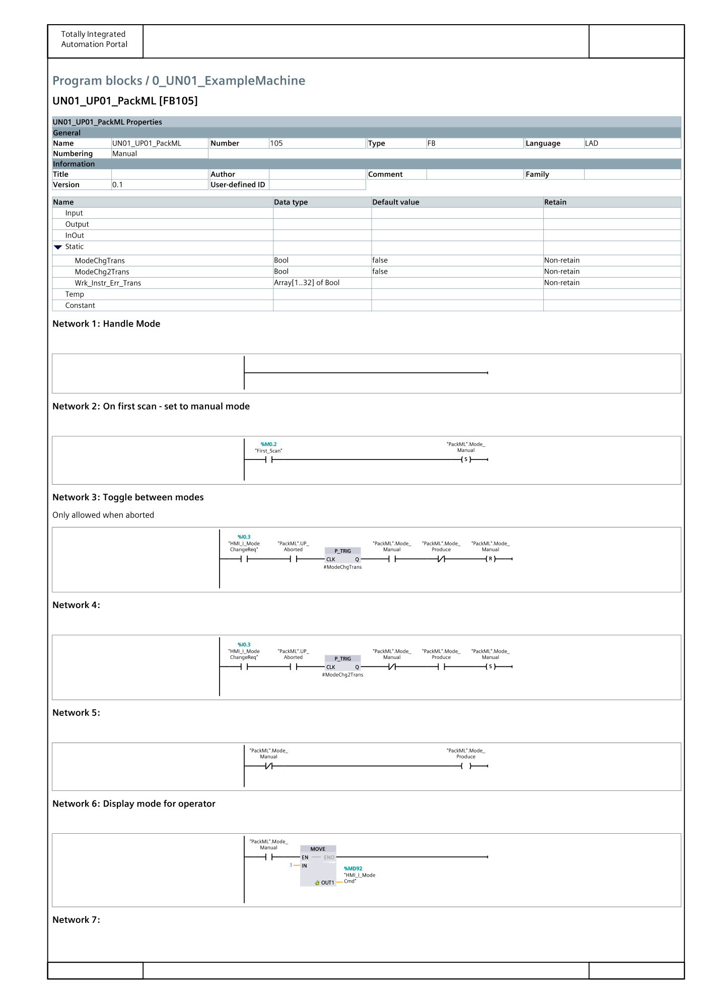
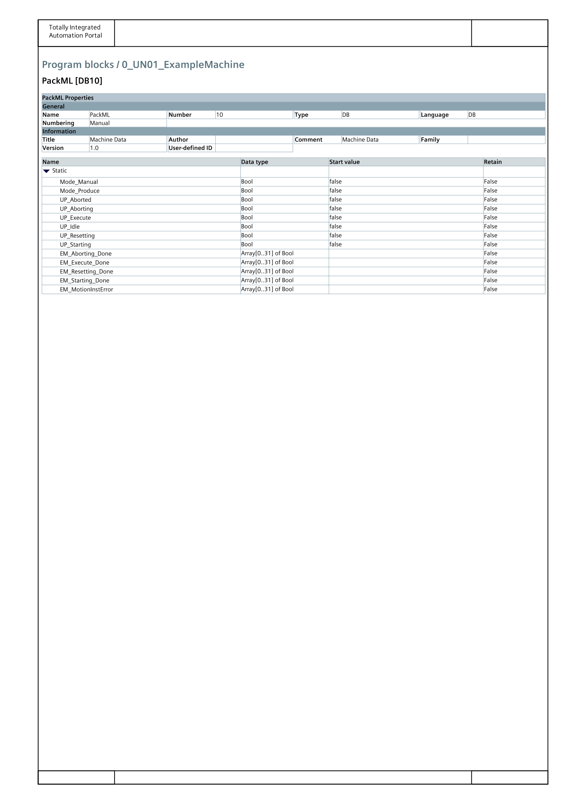
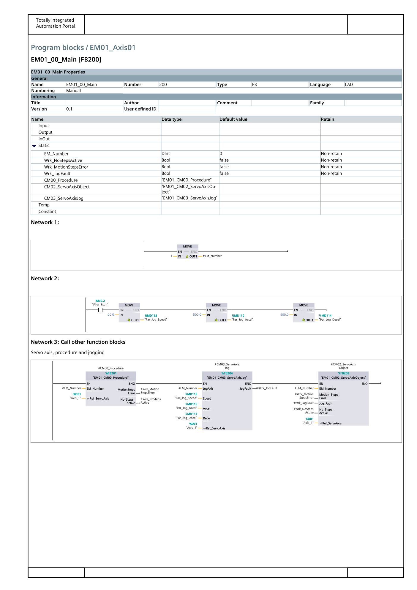

A single-axis PackML-structured motion-control project implemented twice — once on Allen-Bradley ControlLogix with a Kinetix 5300 Ethernet/IP servo drive, and once on Siemens S7-1500 with a SINAMICS S120 PROFINET drive — to exercise the full cross-platform controls workflow.
This project is the cornerstone lab of the EE 5345 PLC Motion Control graduate course. The assignment was to build the same single-axis motion-control application on two different industrial-automation ecosystems — Rockwell Automation (Lab 1R) and Siemens (Lab 1S) — so that the logical design, the PackML state model, and the operator interface stay constant while the hardware, the configuration idioms, and the vendor toolchains all change underneath. The deliverables include a complete Studio 5000 Logix Designer project that drives a Kinetix 5300 servo through a 100 mm linear move and return, and a complete TIA Portal V18 project that drives a SINAMICS S120 servo through a 1000° rotary move and return — both wrapped in a shared simplified PackML state machine and exercised through operator pushbuttons, indicator lamps, and servo tuning trends.
The project builds the practical muscle every entry-level motion engineer needs: configuring a servo drive and its axis object from scratch, writing a step-sequenced motion procedure, closing an operator-facing mode/state machine on top of it, and tuning the velocity and position loops on a real drive with live trend data.
The lab was designed to deliver competence across the full servo-axis lifecycle on both vendor platforms. It was intended to develop working knowledge of Ethernet/IP motion with a Kinetix 5300 drive and PROFINET IRT motion with a SINAMICS S120 drive, complete configuration of servo drives and their associated axis objects (scaling, polarity, load, position/velocity/torque loops, homing, planner, and actions), implementation of a simplified ISA-TR88 PackML state model (Idle / Starting / Execute / Aborting / Aborted / Resetting) with Manual/Produce mode handling, authorship of a linear step-based motion procedure driven by Motion Axis Move / MC_MoveRelative instructions with S-curve acceleration profiles, execution of autotune and manual-tune workflows against live servo trends / traces, and porting of the same logical design across Rockwell Studio 5000 Logix Designer and Siemens TIA Portal V18 with STEP 7 Safety and the Technology Object motion stack.
Both implementations share the same three-layer ISA-TR88 structure so the ported design reads cleanly across vendors. A Unit Procedure (UN01_ExampleMachine) owns the PackML state machine and mode toggle, an Equipment Module (EM01_Axis01) owns one servo axis and the manual-jog controls, and a small stack of Control Modules (CM00_Procedure, CM02_ServoAxisObject, CM03_ServoAxisJog) encapsulates the low-level motion primitives and jog logic. Adding a second axis on either platform is an EM-level instantiation rather than a new program.
1756-L71 ControlLogix (Rev 37) in the local chassis, 1756-EN2TR Ethernet/IP scanner in slot 7 (Rev 12.001), 2198-C1004-ERS Kinetix 5300 single-axis servo drive (Rev 13.002) at 131.151.52.204, paired with a TLY-A220T-HJ62AN rotary servo motor. MainTask set to a 30 ms periodic task with a 2.0 ms Motion Group base update period.
SIMATIC S7-1500 CPU 1516-3 PN/DP (6ES7 516-3AN01-0AB0, V2.8) with SINAMICS S120 CU310-2 PN V5.2 PROFINET drive at 192.168.0.13, 32-point 24 V discrete input (slot 2) and 32-point discrete output (slot 3). PROFINET IRT with Standard Telegram 5 (PZD-9/9), 4 ms Send Clock, 20% communication load, MC-Servo OB91 configured with a Factor of 2.
On the Rockwell side, the 1756-L71 ControlLogix processor in the local backplane communicates to the Kinetix 5300 servo drive over Ethernet/IP through a 1756-EN2TR two-port Ethernet bridge in slot 7. The drive is wired to a TLY-A220T-HJ62AN rotary servo motor whose shaft is coupled to a Macron MSA-628 linear stage through a 5:1 reduction gear and a belt-and-pulley actuator with a 33.42 mm pulley diameter, so one motor revolution translates to a well-defined linear travel used for the 100 mm Motion Axis Move. Digital inputs 1–4 on the drive are wired for Enable, Home, Negative Overtravel, and Positive Overtravel limit switches.
On the Siemens side, the S7-1500 CPU 1516-3 PN/DP communicates to the SINAMICS S120 CU310-2 PN drive over a PROFINET IRT line configured as isochronous mode with Standard Telegram 5 for both the drive object and the absolute encoder (PZD-9/9, 512 increments per revolution, 4096 revolutions, Gx_XIST1 = 11 bits, Gx_XIST2 = 9 bits). The drive is named servo-3 on the network and addressed at 192.168.0.13. The axis itself is configured as a rotary TO_PositioningAxis V5.0 in degrees / deg·s-1, with Dynamic Servo Control (position control in the PLC) enabled and the sync master role assigned to the processor.
The Rockwell firmware is written in Ladder Diagram in Studio 5000 Logix Designer, organized under a single MainTask / MainProgram hierarchy split between a unit program (UN01_ExampleMachine) and an equipment program (EM01_Axis01). The Siemens firmware is written in Ladder Diagram (LAD) in TIA Portal V18 using the Function Block model — FB100 UN01_00_Main and FB200 EM01_00_Main are called from OB1 with matching DB100 and DB200 instance data blocks, while a separate FB105 UN01_UP01_PackML carries the state machine and FB201 / FB203 / FB204 carry the CM00_Procedure, CM02_ServoAxisObject, and CM03_ServoAxisJog control modules. The PackML inter-FB signals are bundled into a single DB10 "PackML" global data block that all FBs reference, while everything else — timers, one-shots, edge detectors, and motion-block instance DBs — lives in the Static area of each FB as local multi-instance DBs.


UN01_00_Main (FB100 / DB100) for the PackML unit, Network 2 calls EM01_00_Main (FB200 / DB200) for the axis equipment module, Network 3 handles the first-scan reset. The UP → EM → CM hierarchy matches the Rockwell project one-for-one.The first phase built the Rockwell project end-to-end. The controller tree was populated with a 1756-IB32 input module in slot 1, a 1756-OB16I output module in slot 2, and a 1756-EN2TR Ethernet bridge in slot 7 at IP 131.151.52.192 with Time Sync and Motion enabled. The MainTask was switched from continuous to a 30 ms periodic task, its program renamed to UN01_ExampleMachine, and two routines (MainRoutine and UP01_PackML) were added. A second program EM01_Axis01 was scheduled under the MainTask with four routines: MainRoutine, CM00_Procedure, CM02_ServoAxisObject, and CM03_ServoAxisJog. Project tags were imported from Axis_Example_CLogix_PackML_Tags.csv so PackML state bits, physical I/O, and motion-block tags all come in at the right scope.
The Kinetix 5300 drive (2198-C1004-ERS, 85–253 V, 0.4 kW) was added under the EN2TR with name Axis_Servo at the lab-assigned IP, and a new axis Axis_1 was created and associated with the drive. A Motion Group with a 2.0 ms base update period was added and Axis_1 was assigned to it. The axis was then configured through the full properties dialog: Motor (catalog number TLY-A220T-HJ62AN), Scaling (initially Direct Coupled Rotary at 1.0 revs per motor rev, later changed to Linear Actuator in mm after the belt-and-pulley transmission was scaled in), Polarity (all normal), Load (rigid coupling, Load Ratio 2.0), Position Loop (6.5 Hz bandwidth, 100% velocity feedforward, 4.9 error tolerance, 0.01 lock tolerance), Velocity Loop (26 Hz bandwidth, integrator hold enabled, ±147.5 velocity limits), Torque/Current Loop (1000 Hz bandwidth, ±200 torque limits), Planner (50 max speed, 200 max accel/decel, 100% max jerk), Homing (Active mode, Switch sequence, NO limit switch, 0.5 search speed), and Actions (Current Decel & Disable on MSF and connection loss).
With the hardware configured, the ladder logic was authored. The UP01_PackML routine implements the simplified PackML state model with two modes (Manual, Produce) and six states (Idle, Starting, Execute, Aborting, Aborted, Resetting). A first-scan rung latches Manual mode and Aborted state so the unit comes up in a known condition. HMI_I_ModeChgReq is one-shot-triggered to toggle between modes (only allowed in Aborted), and HMI_I_ModeCmd is moved to a 3 for Manual or 1 for Produce. Indicator lamps in MainRoutine drive LA_IDLE, LA_EXECUTE, LA_ABORTED, Mode_Produce, and Mode_Manual on Local:2:O with a 1 Hz Lamp_Flash timer that distinguishes transient states (Resetting, Starting, Aborting) from their steady counterparts.

UP01_PackML ladder (Studio 5000) — first-scan initialization, mode toggle via HMI_I_ModeChgReq one-shots with UP_Aborted as a guard, mutual-exclusion between Mode_Manual and Mode_Produce, and lamp outputs on Local:2:O with a 1 Hz flash timer.The CM00_Procedure routine holds the ten-step motion sequence that runs when the PackML state is Execute. Rung 1 is the first-scan initializer that COPs a default MI_Init motion instruction into the Wrk_MI_Move1 and Wrk_MI_Move2 working tags. Rung 2 unlatches every Step_1–Step_10 bit on first scan, during UP_Resetting, and during UP_Idle, so the procedure always restarts clean. The remaining rungs are the step sequence: Step_1 fires a Motion Servo On (MSO) to enable the drive; Step_2 dwells on a Dwell_Tmr for 500 ms; Step_3 executes the first Motion Axis Move (MAM) to +100 mm at the tuned speed/accel/decel using Work tag Wrk_MI_Move1; Step_4 dwells 1 s; Step_5 executes the second MAM back to −100 mm using Wrk_MI_Move2; Step_6–9 handle Motion Servo Off (MSF) and cleanup; and Step_10 latches EM_ExecuteDone[EM_Number]. Error handling is centralized on the last rung: any .ER bit on Wrk_MI_Move1 or Wrk_MI_Move2 one-shots into the global EM_ProcedureError[EM_Number] flag that the unit procedure consumes to transition into Aborting.

CM00_Procedure ladder — EXECUTE state motion steps. Rung 1 initial-scan COPs a default motion instruction into the working tags; rung 2 unlatches all ten step bits on first scan / resetting / idle, so the procedure always restarts from Step_1.
Ref_ServoAxis, Move Type 1 (Absolute), Position 1, Speed 50 units/sec, Accel/Decel Rate 500 units/sec², S-Curve profile with 10% jerk. Step_1 unlatches and Step_2 latches when the Wrk_MI_Move1.PC (Process Complete) bit goes true.The third phase exercised the servo tuning workflow against live trend data. Autotune was run first with Application Type = Basic, Loop Response = Medium, Load Coupling = Rigid, Travel Limit = 100 mm, Speed = 100 mm/s, Torque = 100%, and Direction = Forward Bi-directional; the tuned values for Load Ratio, System Inertia, Maximum Acceleration, and Maximum Deceleration were then accepted into the axis. After autotune a trend was built with CommandPosition, PositionError, CommandVelocity, VelocityError, and CurrentCommand pens in isolated-plot mode.
Manual tuning was then performed. The velocity loop was tuned first: the position-loop proportional and integrator bandwidths were recorded and temporarily set to zero, the velocity feedforward was set to 100%, and the velocity proportional bandwidth was doubled repeatedly until VelocityError or CurrentCommand oscillated, then halved. The velocity integrator bandwidth was then started at one-quarter of the velocity proportional bandwidth and adjusted until the velocity error went to near-zero without oscillation. The position loop was tuned on top of the tuned velocity loop by doubling the position proportional bandwidth until position error oscillated, then halving. Finally, the jerk was swept from 10%, 50%, and 100% of MAM time and compared against a separate trapezoidal profile at the same accel/decel rates, illustrating the S-curve vs. trapezoidal trade-off on position overshoot and velocity ringing.
The fourth phase re-implemented the same logical design on the Siemens platform in TIA Portal V18. The project was opened from the Axis_Example_Blank template, which already contains the global tags and the DB10 PackML global data block. Security settings were opened up (legacy communications, full access, no confidentiality encryption). PROFINET X1 was addressed at 192.168.0.1/255.255.255.0 and X2 at the lab-assigned plant IP 131.151.52.197/255.255.255.128. The SINAMICS S120 CU310-2 PN V5.2 drive was dragged from the Hardware Catalog (PROFINET IO > Drives > Siemens AG > SINAMICS), connected to the processor's PN interface, configured with a DO SERVO submodule and Standard Telegram 5 (PZD-9/9), renamed to servo-3, and assigned IP 192.168.0.13. Isochronous mode was enabled on the drive and the processor was set to Sync Master with a 4 ms Send Clock and 20% communication load.
A TO_PositioningAxis V5.0 technology object named Axis_1 was added under the processor's Technology Objects, configured as a rotary axis in degrees and deg/s, with Encoder 1 tied to the drive's absolute encoder (Standard Telegram 5, 512 increments per revolution, 4096 revolutions, 11-bit Gx_XIST1, 9-bit Gx_XIST2), a reference and maximum speed of 3000, and Dynamic Servo Control with Position Control in the PLC checked. The MC-Servo OB91 cycle time was set to Factor = 2.
On the software side, FB105 UN01_UP01_PackML was added to the 0_UN01_ExampleMachine group and the PackML ladder was re-entered in LAD form, with local Static tags (prefixed with #) for ModeChgTrans and Lamp_Flash_Tmr, P_TRIG edge-detection blocks for the mode-change request, and an S/R-coil pattern on the six state bits in the PackML global DB. The mode toggle was implemented with P_TRIG one-shots in place of the Rockwell ONS instructions; first-scan initialization resets UP_Idle/UP_Starting/UP_Execute/UP_Aborting/UP_Resetting and sets UP_Aborted. The EM01_Axis01 group got FB201 EM01_CM00_Procedure, FB203 EM01_CM02_ServoAxisObject, and FB204 EM01_CM03_ServoAxisJog as multi-instance DBs inside FB200 EM01_00_Main. The CM00_Procedure motion sequence was rebuilt using MC_MoveRelative in place of MAM, parameterized for +1000° and −1000° moves at 20°/s jog speed and 500°/s2 accel/decel.

FB105 UN01_UP01_PackML) — Network 9 first-scan sets UP_Aborted and resets every other state; Network 11 transitions Idle → Starting on START_PB; Network 12 Starting → Execute on EM_Starting_Done; Network 14 transitions to Aborting from any state on STOP_PB or a P_TRIG-edged motion-block error. The same state-bit logic as the Rockwell version, expressed in the Siemens S/R coil idiom.
EM01_00_Main [FB200] Network 3 — calls the three equipment-module function blocks in order: FB201 EM01_CM00_Procedure (motion sequence), FB204 EM01_CM03_ServoAxisJog (manual jog), and FB203 EM01_CM02_ServoAxisObject (servo enable / fault handling). Each block receives the Ref_ServoAxis reference to Axis_1 as an InOut parameter, and Par_Jog_Speed/Par_Jog_Accel/Par_Jog_Decel flow through as jog parameters.
EM01_CM00_Procedure [FB201] step-sequencer scaffolding. Every Step_1–Step_10 is a local Static Bool, and the two MC_MoveRelative instances (Wrk_MC_Move1, Wrk_MC_Move2) are declared as multi-instance DBs in the Static area — scoping each motion-block state to this FB instance exactly the way the Rockwell Wrk_MI_Move1/Wrk_MI_Move2 working tags are scoped to the program.The Siemens side was brought online using the TIA Portal Go online workflow on the PN/IE interface, the hardware configuration was downloaded to the processor, and the software was downloaded without synchronizing blocks. A Watch Window was set up with HMI_I_JogPositive, HMI_I_JogNegative, HMI_I_SelectJogAxis = 1, Par_Jog_Speed = 20.0, and Par_Jog_Accel = Par_Jog_Decel = 500.0. An SCL network was added in FB100 UN01_00_Main to compute Axis_1_PositionError := Axis_1.Position − Axis_1.ActualPosition and Axis_1_VelocityError := Axis_1.Velocity − Axis_1.ActualVelocity so they can be traced alongside the built-in axis variables.
A trace was built with Axis_1.Position, Axis_1_PositionError, Axis_1.Velocity, Axis_1_VelocityError, and Axis_1.ActualAcceleration. The velocity loop is pre-tuned in STARTER on Siemens, so only the position loop was tuned in the PLC: the Kv factor (velocity gain in the Control Loop section of the axis extended parameters) was doubled from its default of 10 until acceleration/velocity-error ringing appeared, then halved. The Precontrol was swept through 25%, 50%, and 100% to observe its effect on position lag; the smoothing time was swept from 0.05 s through 0.1 s and 0.2 s to observe its effect on jerk; and finally the MC_MoveRelative profile was switched from jerk-limited to trapezoidal (jerk input = −1.0) for a direct before/after comparison with the Rockwell autotune result.
The finished project demonstrates a complete, mirrored single-axis motion application across two vendor ecosystems. Specific accomplishments include correct commissioning of a 1756-L71 / 1756-EN2TR / Kinetix 5300 / TLY servo stack on Ethernet/IP and an S7-1500 / SINAMICS S120 stack on PROFINET IRT; full axis configuration on both platforms (scaling, polarity, load, gains, limits, homing, actions on Rockwell; basic parameters, encoder telegram, drive telegram, control loop with Dynamic Servo Control on Siemens); an identical simplified PackML state machine implemented in Rockwell Ladder with OTL/OTU latches and in Siemens LAD with S/R coils and P_TRIG edge detection; a ten-step motion procedure with centralized error propagation using Motion Axis Move on Rockwell and MC_MoveRelative on Siemens; a manual jog module that works against the same HMI_I_JogPositive / HMI_I_JogNegative signals on both platforms; and a complete autotune + manual-tune workflow with captured position-error / velocity-error / current-command trends on the Rockwell drive and position/velocity/acceleration traces on the Siemens drive, including jerk and S-curve vs. trapezoidal profile comparisons.
The project exercised the full skill set of a practicing motion-control engineer. On the programming side it covers Ladder Diagram authorship in both Studio 5000 and TIA Portal LAD, structured program organization under a UP → EM → CM hierarchy, Motion Axis Move (MAM) on Rockwell and MC_MoveRelative on Siemens, step-sequenced motion procedures, OTL/OTU vs. S/R coil idioms, and ONS vs. P_TRIG edge-detection patterns. On the state-machine side it covers the ISA-TR88 PackML simplified state model (Idle / Starting / Execute / Aborting / Aborted / Resetting), mode handling (Manual / Produce), indicator-lamp flash patterns for transient states, and centralized error propagation from motion blocks into the state machine. On the hardware side it covers Kinetix 5300 Ethernet servo-drive configuration, SINAMICS S120 PROFINET drive configuration, linear-actuator scaling through a reduction-gear + belt-and-pulley transmission, absolute-encoder Standard Telegram 5 parameterization, and Time Sync / isochronous mode setup. On the networking side it covers Ethernet/IP I/O trees in Studio 5000 and PROFINET IRT with IO-controller / sync-master configuration in TIA Portal. And on the tuning side it covers servo autotune and manual tune (velocity and position loops), trend and trace capture, Kv / Precontrol / smoothing-time sweeps, and S-curve vs. trapezoidal jerk comparisons.
Controllers & drives (Rockwell): Allen-Bradley 1756-L71 ControlLogix (Rev 37), 1756-EN2TR Ethernet/IP scanner (Rev 12.001), 2198-C1004-ERS Kinetix 5300 85–253 V 0.4 kW single-axis servo drive (Rev 13.002), TLY-A220T-HJ62AN rotary servo motor, Macron MSA-628 linear stage (5:1 gearbox, belt-and-pulley, 33.42 mm pulley).
Controllers & drives (Siemens): SIMATIC S7-1500 CPU 1516-3 PN/DP (6ES7 516-3AN01-0AB0, V2.8), SINAMICS S120 CU310-2 PN V5.2 PROFINET drive, 32-point 24 V discrete input (6ES7 521-1BL00-0AB0), 32-point 24 V discrete output (6ES7 522-1BL00-0AB0), PM190 5A power supply.
Software: Rockwell Studio 5000 Logix Designer (Ladder Diagram, Motion Group, Axis Properties, Autotune, Manual Tune, Trends), Siemens TIA Portal V18 with STEP 7 (LAD, Function Blocks, TO_PositioningAxis V5.0, Watch Window, Trace), STARTER (drive-side velocity loop tuning).
Standards & frameworks: ISA-TR88.00.02 PackML simplified state model, EtherNet/IP and CIP Motion (ODVA), PROFINET IRT with Standard Telegram 5 (PROFIdrive), Rockwell Integrated Architecture motion conventions.
The final deliverable is a pair of working single-axis motion projects that implement the same logical design on two different vendor ecosystems. The Rockwell project drives a Kinetix 5300 servo through a 100 mm forward / 1 s dwell / 100 mm reverse cycle with autotune-derived S-curve profiles, a PackML-compliant unit procedure, and live trend capture for tuning verification. The Siemens project drives a SINAMICS S120 servo through a +1000° / 1 s dwell / −1000° cycle with the same PackML state logic rebuilt in F-block LAD and a matching trace capture. Beyond the working demos, the most valuable outcome was the back-to-back experience of expressing the exact same logical design in two different vendor idioms — OTL/OTU vs. S/R coils, ONS vs. P_TRIG, Motion Axis Move vs. MC_MoveRelative, Motion Group / 2.0 ms update vs. MC-Servo OB91 / Factor 2, Studio 5000 Autotune vs. TIA Portal Kv / Precontrol — which is precisely the translation any controls engineer needs to be able to make fluently on the factory floor.